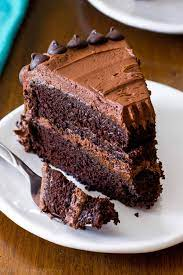

Chocolate Cakes

Decadent Chococlate Cake
This decadent chocolate cake will wow your guests, and leave you wanting more! With just a few simple ingredients,
you can have this amazing homemade cake that can be passed down for generations.
Ingredients
- 1/2 cup butter
- 4 (1 ounce) squares bittersweet chocolate
- 2 eggs
- 2 egg yolks
- 1/4 cup white sugar
- 2 teaspoons all-purpose flour
Steps
- Preheat the oven to 450 degrees F. Butter and flour four 4 ounce ramekins.
- In the top half of a double boiler set over simmering water, heat the butter and the chocolate until chocolate is almost
completely melted.
- Beat the eggs, egg yolks and sugar together until light colored and thick
- Beat together the melted chocolate and butter. While beating, slowly pour the chocolate
mixture into the egg mixture, then quickly beat in the flour and mix until just combined.
- Divide the batter beat the four molds and cook for 6-7 minutes.